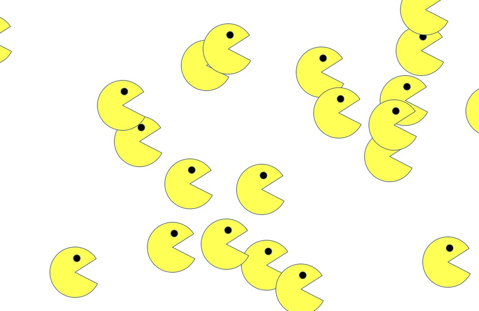

Elden Ring project was one of my first attempts at web development. It is a game, I love to play and have been a huge fan of Fromsoftware game developers. This project will be modified to show true progression of my skill set. This was not a project assigned and is more of passion project. Click on the image and you will see the project in your browser. Link to Repo MyFavoriteWeaponsinElden-Ring

Pacman exercise adds pacamans to the webpage and they move in a random fashion set at random velocity. Click on the image and you will see the project in your browser. Link to Repo Pacman
Real Time Bus Tracking exercise is a bus tracker that used Mapbox.com Api. It tracks bus stops from MIT to Harvard. Click on the image and you will see the project in your browser. Link to Repo Real Time Bus Tracker
Eye Tracker exercise mimics tracking with the mouse cursor. The eyes tracks the movement using javascript code. Click on the image and you will see the project in your browser. Link to Repo Eye Tracker